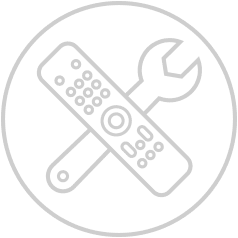

Getting started
Are you new to MAF? Please take a moment to read our Getting started guide.
Read more
API Documentation
Looking for a specific element or function? That is what the API documentation is for.
Read moreDesign guide
If you understand the MAF workflow but you are in doubt how to visualize your app.
Read more